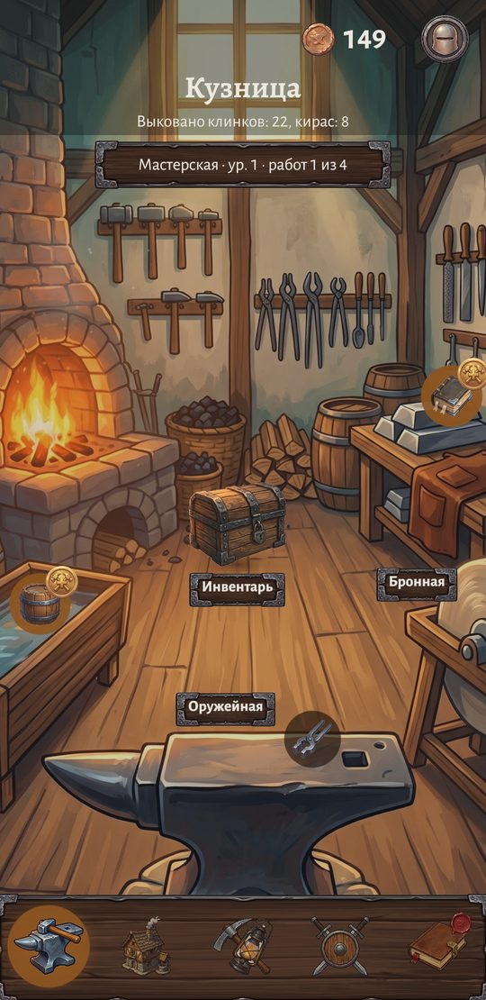
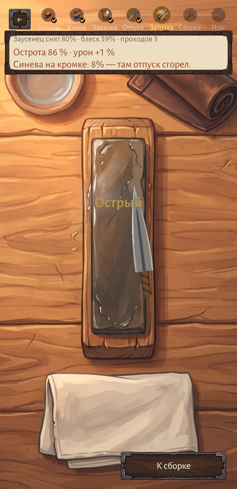

Горн: симулятор кузнеца
Куй мечи и броню настоящими приёмами кузнецов
Тебе досталась заброшенная кузница на краю деревни мастеров. Разожги горн и стань кузнецом, о котором заговорят. Здесь нет магии: только огонь, сталь и твоя рука.
- Android
- Без рекламы
- Работает без интернета
- Русский и английский
- Закрытый тест — скоро
Как это выглядит




Что в игре
- Правдоподобная ковкаМехи и рабочий жар, два молота, проба искрой и магнитом, закалка в воде или масле, отпуск по цветам побежалости, заточка на мокром круге.
- Меч из деталейГарда, рукоять, навершие и баланс. Готовый клинок можно осмотреть в 3D — двух одинаковых нет.
- Бронная мастерскаяКираса выколачивается куполом на пне и собирается на заклёпках и ремнях.
- Деревня и заказыЖители приносят заказы с условиями. С ними можно подружиться — от незнакомца до друга кузницы.
- Вылазки в шахтуФонарь, масло, рюкзак. Руду стерегут медоед и ребристый тритон; бои «до сдачи» — никто не погибает.
- Бой теней на аренеПоединок силуэтов за ширмой: блестит только твой металл. После боя — разбор зазубрин и вмятин.
- Журнал мастераПочему трескается сталь, что такое точка Кюри, какие звери под угрозой — настоящие факты с источниками.
- МастерскаяГорн, наковальня и верстак улучшаются своей рудой и монетами. Испытания гильдии и стена лучших работ.
Игра в разработке: впереди топоры, булавы, шлемы, кожевенная мастерская, лес и побережье с новыми зверями.
Связь
Вопросы, отзывы и сообщения об ошибках: forgewright.games@gmail.com
Игра не собирает личные данные и не показывает рекламу — подробнее в политике конфиденциальности.